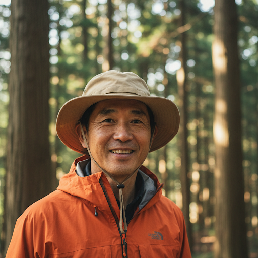

メインガイド | ケンジ / Kenji
本物の体験を
本物の体験を
根底に
「日本の真の美しさは、壮大な建造物ではなく、木々の間の静寂な空間にあります。」
山あいの谷で生まれ育ったメインガイドのケンジは、自然の微妙なバランスを理解することに人生を費やしてきました。15年以上にわたり、マインドフルな探検を率いてきた経験を持つ彼は、旅行者を日本の田舎の深い静寂と繊細な美しさに結びつけることに注力しています。
経歴
京都の山間部で生まれ育ち、15年以上にわたりネイチャーガイドとして活動。
こだわり
有名な観光地ではなく、本当に静かで心安らぐ手付かずの自然をご案内します。
メッセージ
森の静寂の中で、日常の喧騒を忘れる特別な時間を一緒に過ごしましょう。